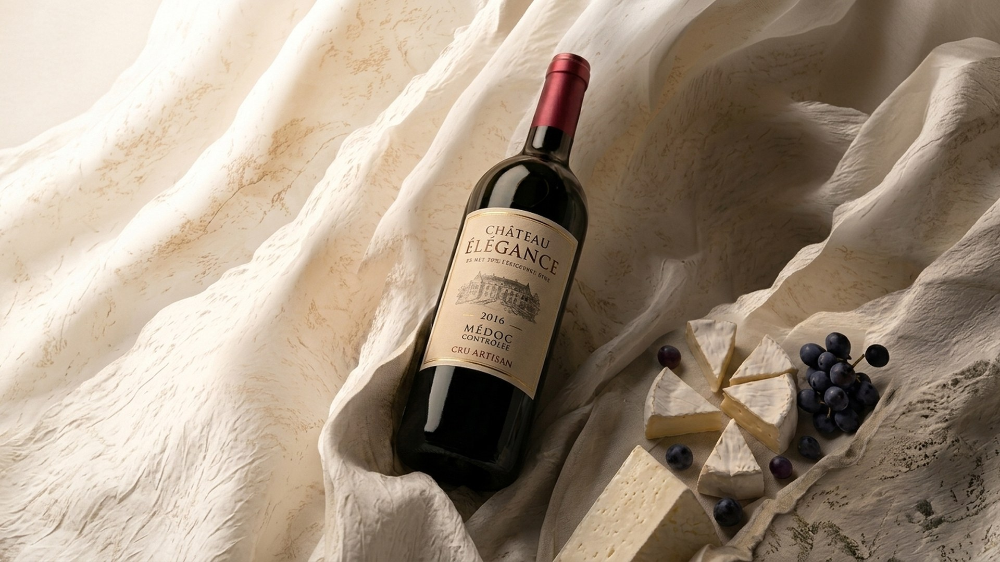
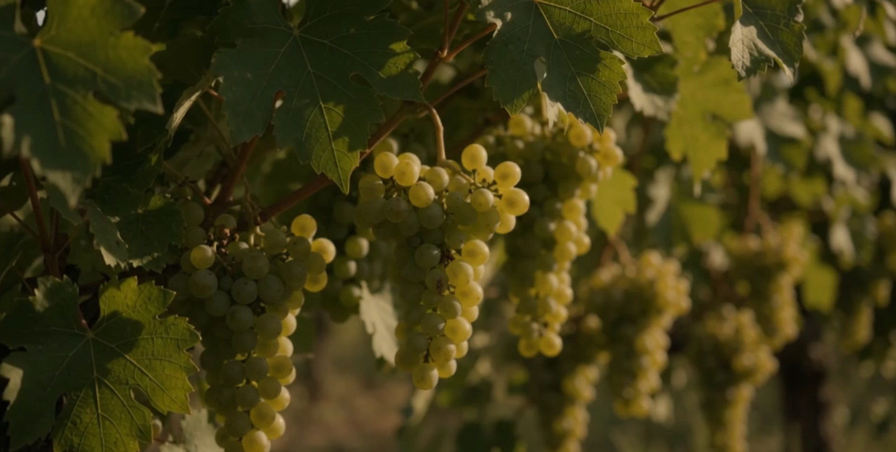
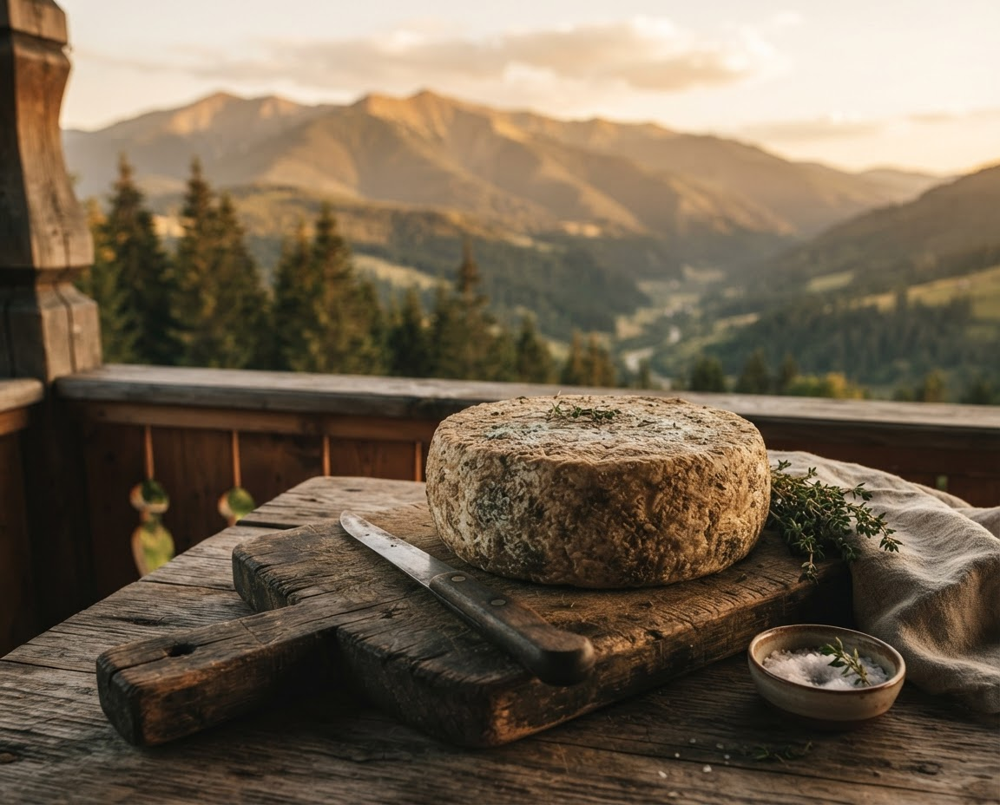

Маєте сир
Оберіть сир з каталогу, і ми знайдемо вино, що розкриє його характер та баланс кислотності.

Вишукані поєднання сирів і вин для моментів, які хочеться смакувати. Відкрийте багатство локальних українських теруарів та сироварень.
Оберіть сир з каталогу, і ми знайдемо вино, що розкриє його характер та баланс кислотності.
Вкажіть сорт або пляшку, і ми підберемо сир, який підкреслить кожну танінну ноту.
Пройдіть короткий інтерактивний тест, і ми створимо персональну пару під ваш настрій.

Перевірені гастрономічні комбінації з найвищим рейтингом збігу експертів.
 98% збіг
98% збіг
Масляниста вершковість сиру ідеально збалансована свіжою кислотністю та яблучними нотами витриманого білого.

95% збігПікантна солонуватість овечого полонинського сиру підкреслюється соковитими цитрусово-мінеральними відтінками.
 94% збіг
94% збіг
Густий карамельно-горіховий смак сиру створює глибоку гармонію з оксамитовими танінами та лісовими ягодами.
Пориньте у затишну атмосферу карпатських сироварень та сонячних виноградників Причорномор'я. Дізнайтеся, як майстерність виноробів та традиції ферментації створюють неповторні українські гастрономічні шедеври.
Створіть неповторну гастрономічну симфонію для вашого вечора за лічені хвилини з експертними рекомендаціями SOMELIA.
Завітайте до нашого флагманського дегустаційного залу в історичному серці Києва на Подолі. Спробуйте автентичні комбінації наживо та поспілкуйтеся із сертифікованими сомельє.
Понад 80 позицій витриманих сирів та 120 найменувань автохтонних українських вин з можливістю персонального сомельє-супроводу.